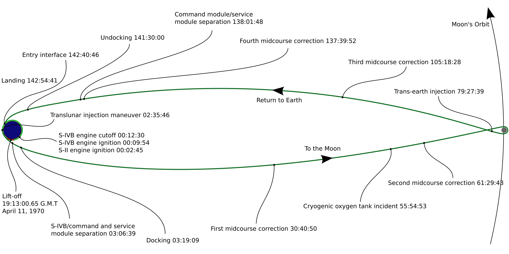
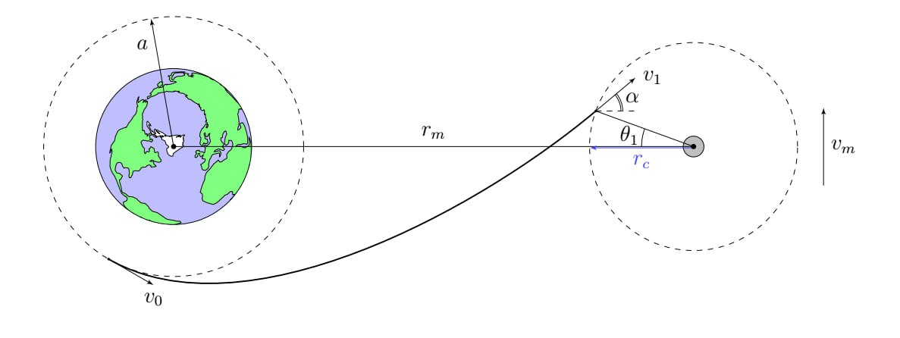
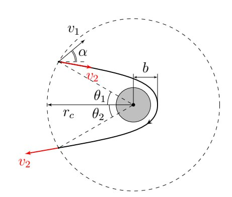

Y26 (2026) — English translation
In this problem we will consider orbits in which you can fly to the Moon and return back. In the simplest problems, as a rule, a flight to the Moon is considered in an elliptical orbit with a major axis equal to $r_m$, where $r_m$ is the distance from the Earth to the Moon. Unfortunately, for a number of reasons, such an orbit is not the most optimal and safe. The main disadvantage of an elliptical orbit is the capture of the spacecraft in the gravitational field of the Moon. During this capture, the craft needs to enter an elliptical orbit around the Moon using maneuvering thrusters, and failure of the thrusters in such a situation could result in crashing onto the lunar surface. This safety problem is solved by a free-return trajectory. The moon acts as a gravitational slingshot and the trajectory appears to be a kind of figure eight. Such an orbit was used, for example, when sending the Soviet Luna-3 spacecraft to the Moon, and they also say that it was along it that the infamous Apollo 13 mission (which allegedly flew to the satellite of our beautiful planet) returned after an accident when approaching the Moon.
In the simplest problems, as a rule, a flight to the Moon is considered in an elliptical orbit with a major axis equal to $r_m$, where $r_m$ is the distance from the Earth to the Moon.
Unfortunately, for a number of reasons, such an orbit is not the most optimal and safe. The main disadvantage of an elliptical orbit is the capture of the spacecraft in the gravitational field of the Moon. During this capture, the craft needs to enter an elliptical orbit around the Moon using maneuvering thrusters, and failure of the thrusters in such a situation could result in crashing onto the lunar surface.
This safety problem is solved by a free-return trajectory. The moon acts as a gravitational slingshot and the trajectory appears to be a kind of figure eight. Such an orbit was used, for example, when sending the Soviet Luna-3 spacecraft to the Moon, and they also say that it was along it that the infamous Apollo 13 mission (which allegedly flew to the satellite of our beautiful planet) returned after an accident when approaching the Moon.
"Chronology" of the Apollo 13 mission.

Throughout the entire task, the following physical constants may be needed: gravitational constant $G = 6.67 \cdot 10^{-11}~\frac{м^3}{кг\cdot с^2}$ mass of the Earth $M_e = 6\cdot 10^{24}~кг$ mass of the Moon $M_m = \dfrac{M_e}{81}$ radius of the Earth $R_e = 6400~км$ radius of the Moon $R_m = 1700~км$ distance between the Earth and the Moon $r_m = 3.85 \cdot 10^8~м$ period of the Moon around the Earth $T_m = 27.4~суток$ orbital speed of the Moon $v_m = \dfrac{2\pi r_m}{T_m}$
Throughout the task, the following physical constants may be needed:
First, let's look at the process of taking off from Earth. A fairly well-known fact is that most of the rocket’s mass is made up of the first stage fuel, which is necessary to develop the first escape velocity and overcome the earth’s atmosphere. Accurate calculations of such takeoffs are extremely difficult. It is the complexity and the need to take into account an infinite number of factors that explains a considerable percentage of unsuccessful rocket launches. Nevertheless, some estimated values can be obtained from fairly simple considerations. Let us consider the vertical takeoff of a rocket from the Earth along the $y$ axis (the $y$ axis is directed vertically upward, the initial coordinates and speed of the rocket are $0$). The initial mass of the rocket is $m_0$. The rocket is acted upon by gravity and the drag force $\vec{F} = -kv \vec{v}$. The rocket emits combustion products from the engine at a constant mass flow rate $\mu$ and speed $u$ relative to the rocket. Consider that $g$ varies little with height. Numerical values: $g = 9.8~\frac{м}{с^2}$ $\mu = 2700~\frac{кг}{с}$ $u = 4.5~\frac{км}{с}$ $k = 0.25~\frac{кг}{м}$ - value of the resistance force coefficient near the Earth’s surface $a = 6600 ~км$ $m_0 = 500 ~т$
First, let's look at the process of taking off from Earth. A fairly well-known fact is that most of the rocket’s mass is made up of the first stage fuel, which is necessary to develop the first escape velocity and overcome the earth’s atmosphere. Accurate calculations of such takeoffs are extremely difficult. It is the complexity and the need to take into account an infinite number of factors that explains a considerable percentage of unsuccessful rocket launches. Nevertheless, some estimated values can be obtained from fairly simple considerations.
Let us consider the vertical takeoff of a rocket from the Earth along the $y$ axis (the $y$ axis is directed vertically upward, the initial coordinates and speed of the rocket are $0$). The initial mass of the rocket is $m_0$. The rocket is subject to gravity and drag force $\vec{F} = -kv \vec{v}$. The rocket emits combustion products from the engine at a constant mass flow rate $\mu$ and speed $u$ relative to the rocket. Consider that $g$ varies little with height.
Numerical values:
At the initial stage of takeoff, the rocket speed is low, so friction can be neglected. Let's find the limits within which this model works during vertical takeoff.
The height of the dense layers of the atmosphere is about $10$ km, so at high altitudes the drag force becomes negligible. Due to this fact, we will not take it into account in the next question.
In reality, the rocket is launched into orbit along a complex trajectory, so the resulting value does not exactly coincide with the actual value. In what follows, assume that the real value is $\beta_1 = 15$.
Let us move directly to the problem of considering the orbit of free return. First, let's find the area in which the gravitational attraction of the Moon affects more than the gravity of the Earth.
First, let's find the area in which the gravitational attraction of the Moon affects more than the gravity of the Earth.

In the future, IN ALL POINTS OF THE PROBLEM, we will call the sphere of radius $r_c$ around the Moon the zone of attraction of the Moon and assume that in it the change in the potential energy of the body is $\Delta U = \Delta U_m$ (i.e., the interaction with the Earth can be neglected), and in the rest of space $\Delta U = \Delta U_e$ (i.e., the interaction with the Moon can be neglected). Also, at all points, consider that the CO of the Moon is progressively moving. Let the ship initially be in a circular Earth orbit of radius $a$. At the right moment in time, it turns on the engines and accelerates to a speed of $v_0$ ($\vec v_0$ directed tangentially to the original circular orbit), such that it can reach the lunar gravitational zone. The minimum distance between the center of the Moon and the ship during movement is $b$. Right before entering the Moon's gravitational zone, the speed of the ship in the Earth's CO is $v_1$. Let us introduce the notation for the 2nd cosmic velocities for the corresponding orbits: $$v_\text{II}^e = \sqrt{\dfrac{2GM_e}{a}}$$ $$v_\text{II}^m = \sqrt{\dfrac{2GM_m}{b}}$$
Также во всех пунктах считайте, что СО Луны — поступательно движущаяся.
Пусть корабль изначально находится на круговой околоземной орбите радиуса $a$. В нужный момент времени он включает двигатели и разгоняется до скорости $v_0$ ($\vec v_0$ направлена по касательной к изначальной круговой орбите), такой, что может достигнуть зоны притяжения Луны. Минимальное расстояние между центром Луны и кораблем в процессе движения — $b$. Прямо перед входом в зону притяжения Луны скорость корабля в СО Земли равна $v_1$.
Введем обозначения для 2-ых космических скоростей для соответствующих орбит:
$$v_\text{II}^e = \sqrt{\dfrac{2GM_e}{a}}$$
$$v_\text{II}^m = \sqrt{\dfrac{2GM_m}{b}}$$
Пусть $\theta_1$ и $\theta_2$ углы показанные на рисунке. В общем виде орбита свободного возврата не обязана быть симметричной, и траектория возврата может отличаться от траектории полета к Луне. Для простоты расчетов будем рассматривать орбиту симметричную относительно прямой Земля — Луна. Тогда угол $\theta_1 = \theta_2 = \theta$. Обозначим $\alpha$ угол между скоростью $v_1$ and direct Earth - Moon.

Further, to determine the required speed $v_1$, we will consider the orbit of the ship in the CO of the Moon in its zone of attraction. For convenience, we introduce the notations $s = \sin(\alpha + \theta)$, $s' = \sin \alpha$, $c = \cos \theta$.
Note. There is no need to select a root sign at this point. Do not forget that within the framework of the model used, the interaction with the Earth in this area does not need to be taken into account.
Let us proceed to the analysis of the obtained expression for $v_1$. Next, the following relationships between quantities are used: $b/r_c \ll 1$ $a/r_m \ll 1$ $r_c/r_m \ll 1$
Let us proceed to the analysis of the obtained expression for $v_1$. The following relationships between quantities are used below:
$$v_1 \approx \dfrac{v_m c}{s} + B_0\cdot \dfrac{b}{r_c}$$
Выразите $B_0$ через $v_m$, $v_\text{II}^m$, $s$, $c$ и $s'$. Выбирая знак корня, покажите, что $B_0 > 0$.
Далее во всех пунктах задачи считайте, что дополнительно выполнено $\alpha \ll 1$.
$$v_1 \approx \dfrac{v_m}{\text{tg}~\theta} + A \alpha + B \frac{b}{r_c}$$
Выразите $A$ и $B$ через $v_m$, $v_\text{II}^m$, $\theta$.
Find an expression for $\alpha$ between the velocity $v_1$ and the Earth-Moon straight line up to first order in powers $r_c/r_m$ and $a/r_m$. Express your answer in terms of $a$, $r_c$, $r_m$, $v_1$, $v_0$ and $\theta$.
Note. Do not forget that within the framework of the model used, interaction with the Moon in this area does not need to be taken into account.
Note. Do not forget that within the framework of the model used, interaction with the Moon in this area does not need to be taken into account.
Let's return to the CO of the Moon again. Until now, we have never used the orbital symmetry condition anywhere. Let's use this condition and construct a hyperbola that is symmetrical with respect to the Earth-Moon straight line and passes through given points: the entry and exit points to and from the Moon's gravitational zone and the pericenter of the orbit.
The resulting system of equations for $v_1$, $\alpha$ and $\theta$ can be approximately solved numerically, but we will not deal with this in this problem. The resulting speed $v_1$ will be an order of magnitude less than $v_\text{II}^e$. Then $v_0 = v_\text{II}^e$.
Calculate the numerical value of $\beta_2$, take the quantities necessary for calculations from part A.
In this part we will look at the lunar landing. We will consider the case of a close approach to the Moon; for numerical calculations, consider $b = 1800$ km. Considering that $h = b - R_m \ll R_m$, we can assume with good accuracy that fuel is spent only on braking to zero speed at the point closest to the Moon.
Source: https://pho.rs/p/5029